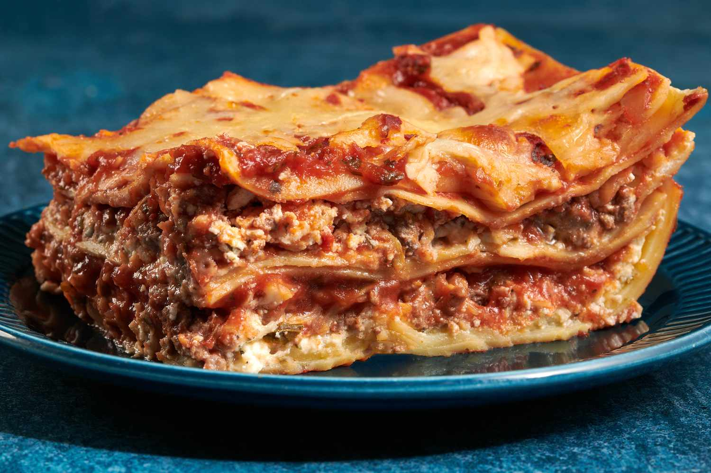

Lasagna

Description
Lasagna, lasagna. How I love thee! It is possibly one of the most loved foods in the whole wide world, and understandably so. There is just something so sentimental about lasagna, so comforting. It evokes images of of gatherings with family and friends all around the world. It is the sort of food that is like a big warm hug, and so more-ish you want to keep digging in until you burst.
Lasagna just rocks. Full stop.
Ingredients
For the Meat Sauce
- 1 tbsp olive oil
- 1 onion
- 1 medium carrot
- 1 celery stick
- 2 garlic cloves
- 1 kg beef mince
- 800g canned crushed tomatoes
- 1/4 cup tomato paste
For the cheese sauce
- 4 tbsp butter
- 1/2 cup flour
- 4 cups milk
- 2 cups gruyere or Colby cheese
- Pinch of freshly ground nutmeg
- Salt and Pepper
For the Lasagna
- 350g fresh lasagna sheets
- 1 1/2 cups mozzarella cheese
- Finely chopped basil or parsley
Steps
To make the meat sauce
- Heat oil in a pan, add all the veggies and cook for 10 mins.
- Add beef, turn heat up, and cook the beef till it turns brown all over.
- Add the rest of the ingredients except the sugar, place lid and cook for 2 hours
- Remove the lid and cook for 30 mins. Adjust salt and pepper, and add sugar. Meat sauce is ready.
To make the cheese sauce
Add all the ingredients in a pan, and mix till thick
Assembly
- Smear meat sauce on the base and cover with lasagna sheets. Then, place them in a baking dish
- Spread more meat sauce and cheese sauce over the sheets and top with lasagna sheets
- Repeat 2 more times
- Bake for 25 mins. Stand for 10 mins
- Garnish with Parsley and serve!
Go Back